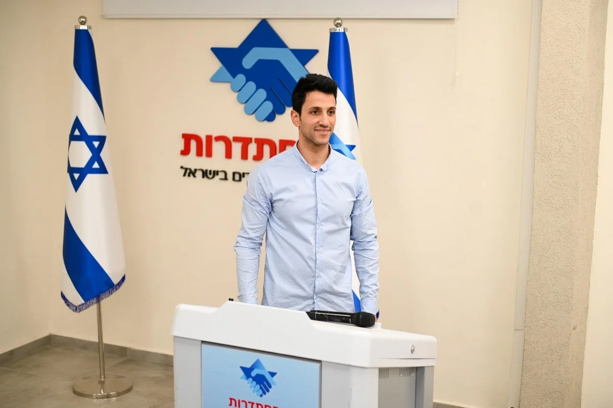
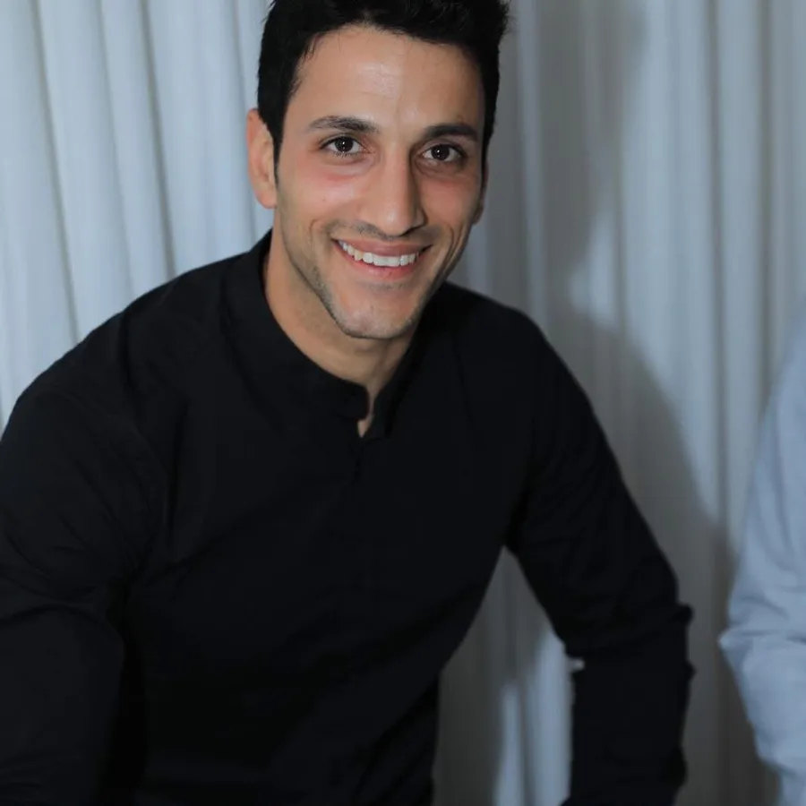

הרעיון התחיל מסיפור אישי
הרעיון לפעילים+ התחיל כשמידד גולן, מייסד ומנכ״ל המרכז לשיפור התנועה, החל לשים לב לשינויים קטנים אצל אמו.

מדי פעם היא התלוננה על כאבי גב. לפעמים הייתה אומרת משהו, וכעבור זמן קצר שוכחת שכבר אמרה אותו.
דברים קטנים, מהסוג שקל לייחס לגיל ולהמשיך בשגרה.
אבל אחרי שנים שבהן פגש דרך המרכז אנשים שכבר התמודדו עם ירידה בתפקוד, מידד הסתכל על הדברים האלה אחרת.
הוא הבין שלשינויים גדולים יש לפעמים התחלות קטנות.
היה חסר משהו באמצע
אמו של מידד לא הייתה זקוקה לשיקום. היא הייתה עצמאית והמשיכה בחייה כרגיל.
אבל דווקא שם הוא זיהה את הצורך: לעבוד על הגוף ועל היכולות הקוגניטיביות עכשיו, כשהיא עדיין פעילה ועצמאית.
הוא חיפש עבורה פתרון מקצועי, פשוט ונגיש שאפשר להתמיד בו כחלק מהחיים — ולא מצא את מה שחיפש.
אז הוא החליט לבנות אותו.
מכאן נולדה פעילים+
יחד עם אנשי מקצוע מתחומי הפיזיותרפיה, הריפוי בעיסוק, השיקום הנוירולוגי והאימון, פותחה פעילים+ — מערכת המשלבת אימון של הגוף והיכולות הקוגניטיביות בשגרה קצרה של כ־10 דקות ביום.
ומה שהתחיל מתוך רצון לתת מענה לאדם אחד, הפך לחזון רחב יותר:
לעזור לכמה שיותר אנשים להשקיע ביכולות שלהם היום — ולא לחכות לרגע שבו יצטרכו להחזיר אותן.
מתחילים עם פעילים+התקדמות ומדידה
כל אימון הוא עוד הזדמנות להבין טוב יותר את היכולות שלכם ולהתאים את האתגר לאימון הבא.
פעילים+ מרכזת את נתוני האימון ומציגה לכם תמונה פשוטה וברורה של ההתקדמות לאורך זמן בגוף וביכולות הקוגניטיביות.
כך תוכלו לראות מה משתפר, באילו תחומים אתם חזקים ואיפה כדאי להמשיך להתמקד.
לראות את ההתקדמות שלכם
מתחילים עכשיוהצוות המקצועי
מאחורי פעילים+ עומד צוות המשלב ניסיון בתנועה, שיקום ויכולות קוגניטיביות.
-

גדי בן שטרית
פיזיותרפיסט מוסמך
בעל ניסיון בתחומי הפיזיותרפיה האורתופדית, הגריאטרית והנוירולוגית.
-

דניאל שפיר
שיקום נוירולוגי
עוסק בחיבור שבין תנועה, תפקוד ויכולות קוגניטיביות.
-

מידד גולן
מייסד ומנכ״ל, המרכז לשיפור התנועה ופעילים+
ניסיון של שנים בתחום התנועה והתפקוד.
שאלות ותשובות
מה זה פעילים+?
פעילים+ היא תוכנית אישית לאימון הגוף והמוח. האימונים משלבים תנועה עם משימות של זיכרון, קשב, קואורדינציה ומהירות תגובה – באימון קצר שאפשר לבצע בבית.
למי פעילים+ מתאימה?
התוכנית מיועדת בעיקר למי שרוצה להמשיך להיות פעיל, חד ועצמאי, ולחזק באופן קבוע את היכולות הגופניות והקוגניטיביות.
כמה זמן צריך להתאמן?
האימון היומי אורך כ־10 דקות. המטרה היא ליצור שגרה שקל להתמיד בה לאורך זמן.
צריך להיות בכושר כדי להתחיל?
לא. התוכנית מותאמת ליכולות ולרמה שלכם, ומתקדמת בהדרגה בהתאם לביצועים.
איך האימון מותאם אליי?
בתחילת הדרך אנחנו לומדים על היכולות, המטרות וההעדפות שלכם. בהמשך המערכת נעזרת גם בביצועים שלכם כדי להתאים את רמת האימון.
מה מיוחד באימונים של פעילים+?
במקום לעבוד רק על הגוף או רק על המוח, חלק מהתרגילים משלבים ביניהם. בזמן התנועה תתבקשו גם לחשוב, לזכור, להגיב ולענות על שאלות.
איך האפליקציה יודעת אם אני מבצע את התרגיל נכון?
בתרגילים נתמכים, המערכת משתמשת במצלמה כדי לזהות את התנועה ולנתח מדדים הקשורים לאופן הביצוע. כך ניתן לקבל משוב ולעקוב אחר ההתקדמות לאורך זמן.
אפשר לראות את ההתקדמות שלי?
כן. פעילים+ עוקבת אחר הביצועים ומציגה לכם כיצד אתם מתקדמים בתחומים כמו תנועה, קואורדינציה, קשב, זיכרון ומהירות תגובה.
צריך ציוד מיוחד?
ברוב האימונים לא. בהתאם לתוכנית שלכם ייתכן שימוש בכיסא או בציוד ביתי פשוט.
אפשר להתאמן מהבית?
כן. פעילים+ נבנתה במיוחד כדי לאפשר אימון נוח בבית, בזמן שמתאים לכם.
האם פעילים+ מחליפה פיזיותרפיה או טיפול רפואי?
לא. פעילים+ היא תוכנית אימון ואינה תחליף לאבחון, טיפול רפואי או פיזיותרפיה כאשר הם נדרשים.
מה קורה אם תרגיל מסוים קשה לי?
המטרה היא שהאימון יתאים ליכולת שלכם. אם תרגיל מרגיש קשה מדי, ניתן להתאים את רמת הקושי ולהמשיך בהדרגה.
איך מתחילים?
עונים על כמה שאלות קצרות, מקבלים תוכנית שמתאימה לכם ומתחילים להתאמן. משם פעילים+ כבר מלווה אתכם לאורך הדרך.